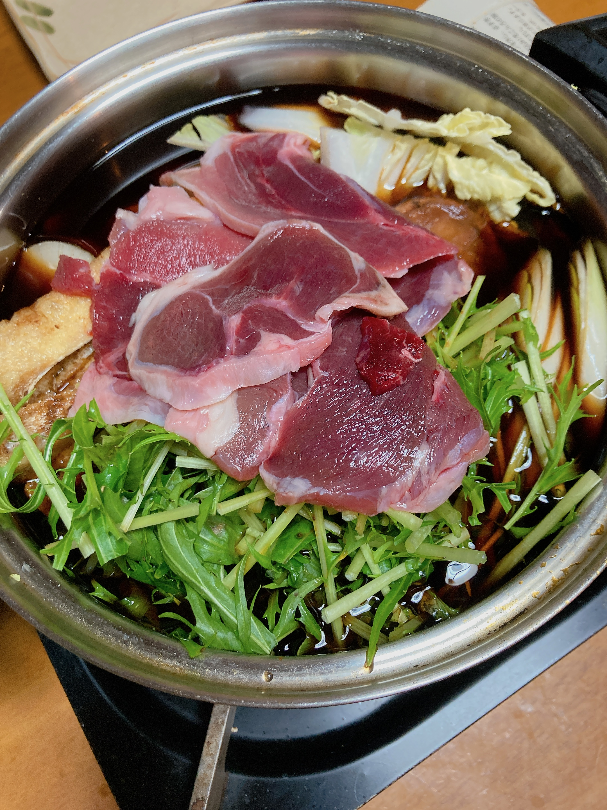
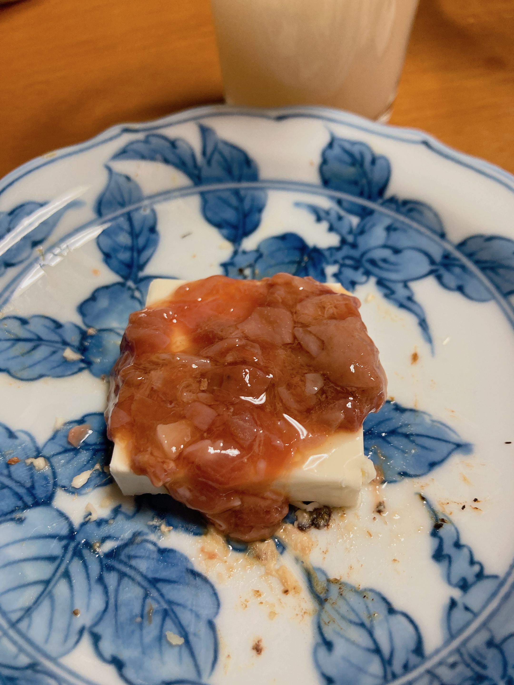

飲みすぎた
酔いすぎて眠 日記、起きたら書く！
— ₍₍⁽⁽🍳₎₎⁾⁾ (@sal_pipr) December 30, 2023
酔っ払い、ホームアプリ開いた。「おやすみ」ボタン押した。家の照明全部消えるはずだった。
— ₍₍⁽⁽🍳₎₎⁾⁾ (@sal_pipr) December 30, 2023
消えなかった。
回らない頭に実家の理不尽さが流し込まれた。かなしい。
がんばって入眠する。
日記を書く時間がなさすぎてこれで許してください。

ちなみに食べたのぼたん鍋。

酒盗クリームチーズ、おいしい！（飲みすぎ）